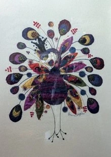

Irene Taylor Moores

Rwyf wedi gweithio fel Dylunydd Patrymau Arwyneb ac Artist am y rhan fwyaf o fy mywyd.
Rwy’n paentio gydag Acrylig yn bennaf.
I have worked as a Surface Pattern Designer and Artist for most of my life.
I paint mainly with Acrylics.
01248 410154 / 07880 893635
morwenart@icloud.com
GAMDDA, CITY DULAS, LL70 9EX
Dan ni ar yr A5025 rhwng Benllech ac Amlwch.
Mae’r Fynedfa rhwng Tafarn y Pilot Boat a Garej Dulas Boatyard.
Situated on the A5025 between Benllech and Amlwch.
Entrance in lay by between Pilot Boat pub and Dulas Boatyard/Petrol station.